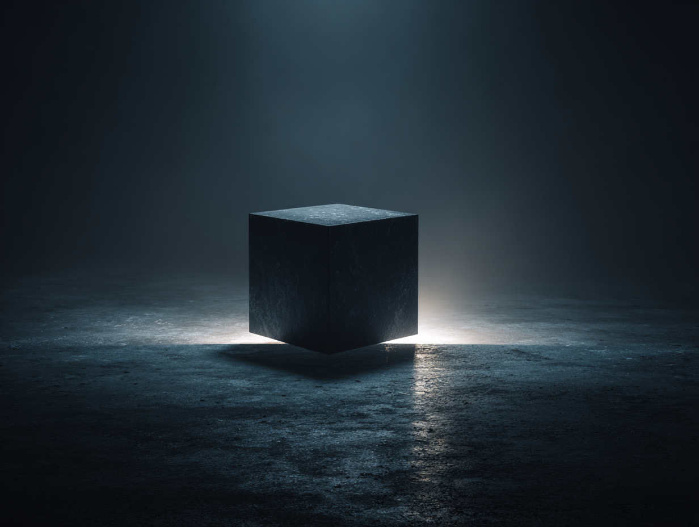
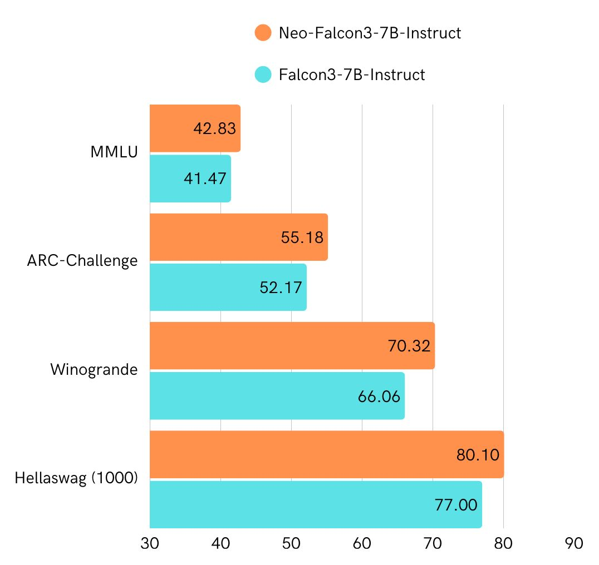
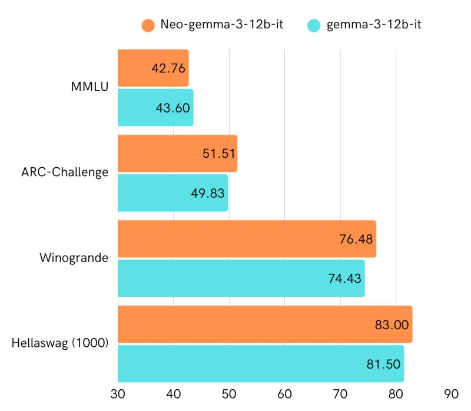

Blackice Lab
Independent AI Research
We research diffusion language models, world models, transfer learning, and model optimization — building from scratch at accessible scale.
Research
Blackice DLM
A diffusion language model trained from scratch on a MacBook Pro M4 Max and cloud GPUs. The model uses absorbing-state discrete diffusion with a cosine noise schedule, bidirectional attention, and iterative denoising for text generation.
Architecture
- 28 transformer layers, 1024 hidden dim, 16 attention heads, SwiGLU FFN
- Block Attention Residuals — learned depth-wise aggregation at block boundaries
- U-Net mirrored skip connections between encoder and decoder halves
- Looped middle blocks for extra compute depth without additional parameters
- Gated attention, RoPE, self-conditioning, EMA
Training
- Trained on FineWeb-Edu-Dedup with cosine LR decay and adaptive time warping
- Progressive context length: 256 → 512 → 1024 → 2048
- Best ELBO perplexity: 24.87 at seq_len 2048
- Winogrande accuracy: 54.22% (via cross-architecture weight merging with Qwen2.5-0.5B)
Techniques Explored
- LoRA/DoRA fine-tuning, SFT, GRPO reinforcement learning
- Coupled-GRPO with antithetic variates for variance reduction
- Doc-to-LoRA hypernetwork for document-conditioned adapters
- Cross-architecture weight merging (Procrustes alignment + SLERP)
- MLX inference port for fast Apple Silicon sampling
- Mixed-data continual pretraining (FineWeb + Cosmopedia)
Blackice Zeus
A world model that learns to simulate Atari environments from pixels alone, discovering latent actions without any action labels. Built in two stages: a DreamerV3-style model-based RL agent (Stage A) and a Genie-inspired latent action model (Stage B) that discovers controllable actions from unlabeled video.
Key Results
- Playable dream with all game elements — paddle responds to keyboard, ball visible, bricks break on collision
- Latent action discovery validated on Breakout and Pong — shuffling actions makes prediction 9.8x worse
- Spatial tokens (8×8 grid) outperform flat latents with half the dimensions (512 vs 1024)
- Single-step action-sensitive prediction achieved on spatial tokens (impossible on flat latents)
- Trained entirely on a MacBook Pro M4 Max
Architecture
- Categorical VAE encoder/decoder with motion-aware loss weighting
- 4×4 and 8×8 spatial token grids (16–64 tokens per frame)
- Causal transformer dynamics with KV-cache for imagination rollouts
- VQ-VAE latent action model with direct endpoint prediction (k=4)
- Learned state-conditioned action mapper for dream-time control
- Scheduled sampling (90%) for closed-loop robustness
Transfer Learning & Model Merging


Research on heterogeneous model merging and cross-architecture knowledge transfer. Techniques span from merging instruction-tuned LLMs across model families to transferring knowledge between fundamentally different architectures (autoregressive → diffusion).
Neo Collection
A collection of LLM merges using novel heterogeneous merging techniques, combining models across different families and architectures.
- Neo-Falcon3-7B-Instruct — merge of Falcon3-7B + Qwen2.5-7B, reached #1 on HF Open LLM Leaderboard (<7B category)
- Neo-Gemma-3-12B-Instruct — heterogeneous merge of Gemma-3-12B
- Neo-Mistral-8B / 3B-Instruct — merges of Ministral instruction models
- Neo-Qwen-4B-Instruct — merge of Qwen3-4B
Cross-Architecture Transfer (AR → DLM)
- Procrustes-aligned weight merging (SVD rotation + per-row SLERP) from Qwen2.5-0.5B into a 390M diffusion LM
- 54.22% Winogrande accuracy — closing in on native AR models at the same scale
- FFN layers transfer across attention architectures (bidirectional DLM ↔ causal AR)
Sia
A unified toolkit for making language models smaller and faster, implemented entirely in MLX for native Apple Silicon execution. 16 pruning methods and 7 distillation methods spanning dense models, MoE architectures, and structured compression.
Pruning (16 methods)
- Layer pruning: ShortGPT (block influence), E3-PRUNER (KL divergence)
- Structured pruning: FLAP, Bonsai, LoRAPrune, NIRVANA, HFPrune, DDP (differentiable mask search)
- Hidden dimension: SliceGPT (PCA-based width reduction)
- MoE-specific: REAP (expert removal), MergeMoE (expert merging), SlimMoE (width reduction), EvoESAP (evolutionary search), LightMoE
- Other: Minitron (depth+width+attention), SuperPCA, SuperREAP
Distillation (7 methods)
- TAID (ICLR 2025) — token-adaptive interpolated distillation, SOTA with only 1.1x overhead
- GKD — on-policy generalized KD, student generates + teacher scores
- DSKD — dual-space knowledge distillation
- DistiLLM 2 — skew KL + adaptive off-policy
- GRAIL — gradient-aligned distillation
- Free Lunch KD — zero-cost logit matching
- Logit KD — standard KL divergence baseline (Minitron-style)
Temis
A collection of language models fine-tuned on 357K articles from the Spanish Official State Gazette (BOE), specializing in legal and administrative language. Named after Themis, the goddess of justice.
Models
- Gemma 2B & 7B, Llama 3.2-1B & 3-8B, Mistral 7B-v0.3
- Qwen 2.5-0.5B & 1.5B, SmolLM-360M
- 8 models spanning 360M to 8B parameters, all trained on BOE legal corpus
Thoth & mlx-D2L
Compresses document knowledge directly into model weights instead of consuming context window tokens. Ported Sakana AI's Doc-to-LoRA technology to Mistral's Ministral-3B and reimplemented the full inference pipeline in MLX for native Apple Silicon support.
Key Results
- Hypernetwork trained from scratch on Ministral-3B — 0.744 loss over 4K steps on synthetic QA pairs
- Thoth agent: DSPy-based reasoning system that converts documents into LoRA adapters on-the-fly
- Knowledge-in-weights approach keeps context window free for reasoning, replacing traditional RAG
- Full MLX inference pipeline — no CUDA required
TinyLoRA
MLX implementation of TinyLoRA (“Learning to Reason in 13 Parameters”), a parameter-efficient fine-tuning method that achieves strong task performance with extremely small adapters. Validated on Texas Hold'em poker strategy with Llama 3.2-1B.
Key Results
- Standard fine-tuning (LoRA + unsloth-mlx on PokerBench): preflop 7%→83%, postflop 13%→55%
- TinyLoRA (arXiv 2602.04118): preflop 7%→36%, postflop 13%→60% with a 470KB adapter
- TinyLoRA achieves comparable postflop accuracy to full LoRA with orders of magnitude fewer parameters